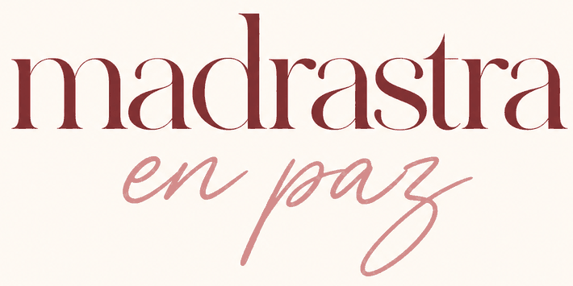
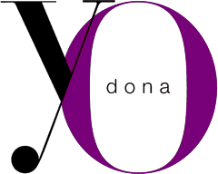

Dosier · Pri y Alexa · 1/2

para que ser madrastra deje de vivirse en soledad
Fui hijastra antes de ser madrastra, y después me convertí en madre. Esa trayectoria me permite mirar la familia ensamblada desde todos sus lugares: el de la niña que busca su sitio, el de la mujer que se enamora de alguien que ya tiene criaturas y el de la madre que aprende a conciliar mundos distintos.
Comunico, divulgo y acompaño para que las madrastras y las familias ensambladas tengan información, compañía y un lugar en la conversación pública. Mi trabajo se apoya en la comunicación no violenta, la inteligencia emocional y la crianza respetuosa.
lo que hago
Madrastra en Paz
La comunidad de madrastras más grande en español: encuentros en directo, material práctico y un grupo donde no hace falta explicar el contexto.
ASTRAS
La primera asociación de madrastras en España, que trabaja por el reconocimiento del rol y la protección de la infancia.
Contenido y podcast
Redes sociales, el primer podcast para madrastras en España, una newsletter y los cuentos de Helu.
Charlas y formación
Conferencias y talleres para centros educativos, instituciones, empresas y profesionales que trabajan con familias.
en la gala
Me gustaría contar la noche desde dentro, dar a conocer a las personas premiadas y acercar vuestro trabajo a una comunidad de mujeres que confía en lo que comparto (también aquí, en el norte). Como invitada, como prensa o de la forma que consideréis más adecuada.
